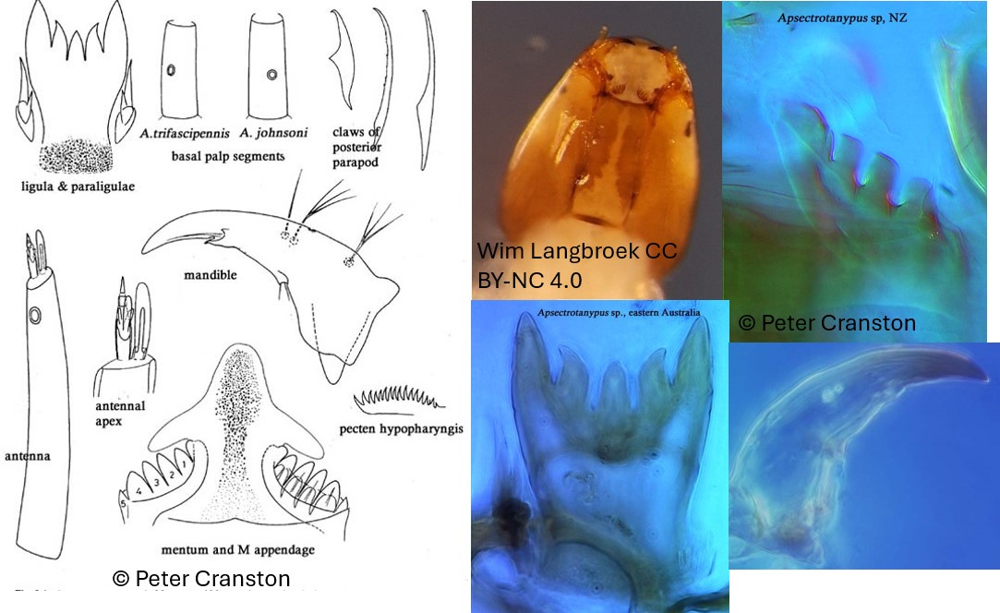

Apsectrotanypus trifascipennis (Zetterstedt, 1838)

Indice Céphalique
0.7-0.83
Ratio antennaire
6.5-7.6.
Mandibules
Mandibules minces, modérément courbées. Dent apicale 2.5x aussi longue que la largeur basale. Dent dorsolatérale interne petite à grande.
Tubules anaux
4 plutôt longs et coniques
Procercus
4-5x plus long que large, avec 10-16 soies apicales.
Parapode postérieur
13-16 griffes ; dont quelques grandes griffes avec de fines spinules rapprochées sur la face interne ; et des plus petites griffes simples, faiblement courbées.
Soies céphaliques ventrales
S10 postérolatérale et proche de S9. S10 antérolatérale (ou très latérale) à SSm. VP postérolatérale à SSm et distante à S9 et S10.
Ecologie
Les larves d’Apsectrotanypus vivent dans les petits cours d’eaux froids
Espèces recensées en France
1 : Apsectrotanypus trifascipennis